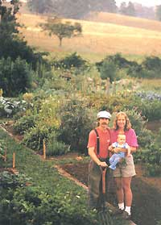
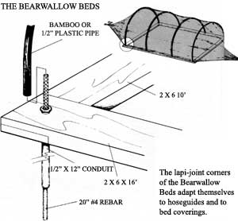

PATH OF LEAST RESISTANCE
Clever ways to manage the spaces between your crops.
©BROWNIE HARRIS
Susan and Franklin Sides (and little Walker) with the Bearwallow Beds described in the article.
Gardeners often treat their growing areas as almost sacred soil, while ignoring the earth directly underfoot-the pathways. We put so much energy into tending our crops and flowers that the spaces between the beds are mostly forgotten. But then one day we suddenly realize that we're forced to spend more time weeding the pathways than the crops. Or we get fed up with walkways that become as slick as boiled okra every time it rains. Or we pull another clump of tough-rooted grass and wonder if there's any way to keep that aisle cover from invading the asparagus.
Sound familiar? If your paths lead to similar toils and troubles, it's time you took a better look at just where you stand in your own garden. Everyone wants low-maintenance walkways that look good and make getting around pleasant and efficient. The ideas offered here can help you have them.
One note: Many of my techniques apply better to gardens with beds (wide growing areas) than to those devoted to row crops. Another note: Whatever pathway panacea you prefer, make sure the paths themselves are wide enough to handle the jobs you need to do. If you can't bring in a garden cart without crushing your lettuce or can't weed the tomatoes without sitting on the beans, you need wider paths (18 inches is narrow, 36 is wide). You may even want to work out an artful combination of different-sized pathways to use space most effectively.
Dirt Paths
Pathways with unusually poor soil or heavy foot traffic may sprout so few weeds they can be left as is. (That's rarely been my luck.) If too many unwanted plants do shoot up, you can chop them off with a hoe. Better yet, sharpen the edge of a flat-faced spade, run it just under the soil surface when the earth isn't wet, and skim off the weeds. Skimming's not too difficult, and the results are clean lines with that well-manicured look.
If too much rainwater runs into your beds from the pathways, try working on the aisles once in a while during the wet season. Push a heavy garden fork about two-thirds of the way into the soil, and wiggle it to create air spaces. Repeat the process every six to 12 inches. (Either that or redesign your garden so pathway rivulets run through and out of the plot.)
Drawbacks: Hoeing or skimming a large garden is time-consuming and hard on folks with bad backs.
Mulch
Many gardeners cover their pathways with mulch. Grass clippings, straw, leaves or sawdust will shade out weeds, conserve soil moisture and keep walkways high and dry. If the mulch is thick enough, you can easily pull up any unwanted growth that does appear. Last year's decomposed mulch can either be tilled into the garden beds and a new layer added, or be left in place with a pile of fresh materials on top.
If you mulch with hay, first spread it out in an unused area and turn it occasionally, so its seeds won't sprout in your plot. Otherwise, pile it deep in the aisles, and flip it over in place if some seeds sprout.
Other materials that people have used for pathway cover include cardboard, newspaper, shredded computer printouts, heavy paper feed sacks and carpet remnants. Commercial growers use permeable landscape cloth to keep weeds from growing in perennial areas. It works great on pathways, too-but gets expensive if you've got a big garden. All of these materials are usually covered with a layer of organic matter.
A three-inch layer of bark chips or gravel can provide good cover for permanent pathways, but you'll need to contain the material with an edge barrier (discussed below) and replenish it as needed.
Drawbacks: Organic mulches may attract and harbor slugs. Mulch can interfere with hand-or machine-digging of beds unless it is raked aside or contained by edging. And heavy winds can wreak havoc on newly applied light mulch materials.
Grass Pathways
Handsome grass pathways help prevent soil erosion, moderate soil moisture levels and even keep your shoes clean. Richard Fry (a fine local horticulturist/landscaper) recommends using a mixture of fescue grass and white clover in paths. Tall fescues are tough enough to bear heavy foot traffic, but they need frequent mowing. To reduce mowing chores, use one of the newer turf fescues that are slower growing and have finer blades.
You can keep the grass from invading your growing beds by cutting it back with a spade or a half-moon edging tool. But you'll have less work in the long run if you install a physical barrier along your borders. It's best, too, to plant compact plants around the edges of your garden beds-sprawling ones will spread onto the grass, making mowing
difficult.
Drawbacks: Grass pathways require mowing and will creep into growing areas if not contained.
Sheet Composting
Sheet composting consists of tossing kitchen wastes and other compost fare into the pathways and covering it all with a carbon-rich material like leaves or straw. Earthworms are attracted to the area and help the in-garden composting process. After a season or two, the pathways are plowed up and planted. The former growing areas become the new pathways and get sheet composted themselves. The method is most often used in sandy or loose soils.
Drawbacks: You have to reestablish growing beds every year or two. And you still have to cope with weeds in pathway areas that haven't yet been sheet composted.
People use everything from used tire treads to old car bumpers.
Solid Pathways
Solid pathways range from simple 1 X 12 boards placed over the aisles of a postage-stamp-pattern garden to fine bricks laid in a fancy herringbone pattern. Whatever materials you use, solid pathways are a good choice for walkways that see a lot of shoe soles and the tires of many garden machines. Dug-up stones, slats from shipping pallets, slices cut from round logs, and salvaged bricks or chunks of flat concrete are some inexpensive material choices. You might even want to fashion your own concrete stepping stones. To increase traction, scratch their tops with a pattern, or embed gravel or pebbles.
Purchased flagstone, bricks and concrete steps carry a higher price tag and take some skill to lay well. But they provide solid, lovely walkways. (You may want to use such costly materials only in your main center path.)
Before installing a solid pathway, dig out any weeds and grass. Once it's set, plant something low and ground-hugging in the cracks, like creeping thyme or Roman chamomile, so new weeds can't claim those gaps for strongholds. Another solution is to lay down an inch of gravel (quarry fine grade), put in your bricks or whatever, then fill around them with two more inches of the loose stone.
Drawbacks: If you don't use gravel or a ground cover to keep down unwanted growth, you may get stuck with some tedious pathway weeding. Some of the nicest materials for solid pathways are expensive.
Edgings
At some point, the pathway ends and the growing area begins. This border is where a good edging can help keep the gravel out of the greens or the crabgrass away from the carrots. Edgings are also used around garden perimeters to separate plot from yard. Just as with pathway materials, there's a world of choices for bed barriers.
• Commercial aluminum or plastic edgings: Richard Fry says any store-bought edging should be at least four inches tall and be buried securely so it won't get pushed out by frost heaves. In fact, Fry suggests installing such thin edgings in spring or fall. Otherwise, those put in during summer may develop gaps at their joints when winter comes, while ones installed in winter may buckle and bend the following summer. (Richard also praises the metal edging made by Ryerson Steel Company. He says it's the only edging he's ever used that stays put, keeps grass out and should last a lifetime. You can call Ryerson's home office in Chicago-at 312/762-2121-to find a distributor near you.)
• Landscape timbers: Widely available and attractive, landscape timbers are treated with chromated copper arsenate (CCA), a relatively safe preservative that's not readily absorbed by plant roots. Railroad ties, on the other hand, have been treated with creosote and possibly pentachlorophenal. These serious toxins are taken up by plants. So while landscape timbers make acceptable edgings, don't use railroad ties near any food plants.
• Board borders: These can be made from scrap or purchased wood and are installed either vertically like commercial edging (Gardener's Supply, 128 Intervale Rd., Burlington, VT 05401, sells handy brackets for this job) or horizontally. Boards laid flat should be fastened at the ends and be at least as big as 2 X 4s: The deeper and wider your boards, the better your control of invasive growth. And if you lay them so that from ½ inch to a fall inch of wood extends above ground level, a lawn mower can do a better job of trimming the pathway grass right next to the boards.
• Concrete blocks: Set them on their sides, and grow flowers or other attractive plants in the holes. The lime that leaches from blocks makes them particularly good homes for many herbs.
• Log rounds: One- to two-foot-long log rounds can be set perpendicularly into the ground for a nice, rustic-looking barrier. You may want to position a few horizontally to alter the effect and conserve wood. Log rounds are available commercially, or you can cut your own.
• Rocks: Good size quarry rocks can be used to build free-standing bed borders, but they need to extend well into the ground. Rocks are beautiful but hellacious to weed around. They're also not a solid deterrent to wandering grass.
• Bricks: Bricks are expensive, but beautiful when laid flat and side by side. They're easy to edge-mow and can even be laid out in curves.
• Creative choices: People have made garden barriers out of all sorts of things, from used tire treads (cut out with a saber saw) to old car bumpers. Use your imagination and think about what's readily available, fits your budget and would look good in your garden.
A good edging keeps gravel out of the greens and crabgrass away from the carrots.
My Own Choice
Maybe someday I'll be blessed with a large supply of free flagstones or bricks along with a large crew of eager friends to help me lay them in my garden. In the meantime, though, I'll admit my fondness for "Bearwallow Beds," the border system my husband, Franklin, and I devised when we gardened atop nearby Bearwallow Mountain. (See the photo that leads off this article.) Our main paths were sown in fescue and white clover and bordered by 2 X 6 cedar boards. Each 10-foot by 16-foot wooden rectangle housed two four-foot-wide raised beds, with a one-foot-wide dirt path between them (see the illustration).
The corners are a simple lap joint, mortised halfway through so the boards lay flush. We drilled a ¾-inch hole through each corner and hammered a 12-inch length of ½-inch i.d. (inside diameter) metal conduit through and into the ground until it was almost flush. The end of the conduit that was still sticking up was flared outward to hold the wood down. Then we hammered a 20-inch-long piece of rebar down through the conduit and into the soil, leaving six inches of the metal bar sticking aboveground. We covered that dangerous-looking protrusion with bamboo, PVC or a section of discarded hose and-presto change-created a mild-mannered hose roller to allow us to maneuver our watering hose around, but not over the beds.
On some beds, we added additional 12-inch lengths of rebar along the sides (spaced two to three feet apart). We could set half hoops of PVC on these anytime we wanted to cover a pair of beds with polyethyiene, Reemay or shade cloth. Bearwallow Beds cost some money up front, but they last for years, saving countless hours of hand edging. The boards can be disassembled in the fall and stored indoors to further lengthen their life or, if necessary, moved to a new location altogether.
Yes, these simple, effective Bearwallow Beds seem to me to be just about the best possible choice for a vegetable garden border-that is, if I can't have my bricks and my bricklayers, too.
|
 |
 |
|